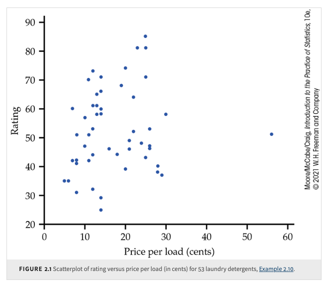
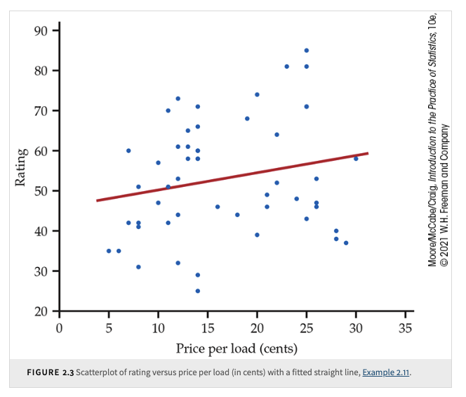
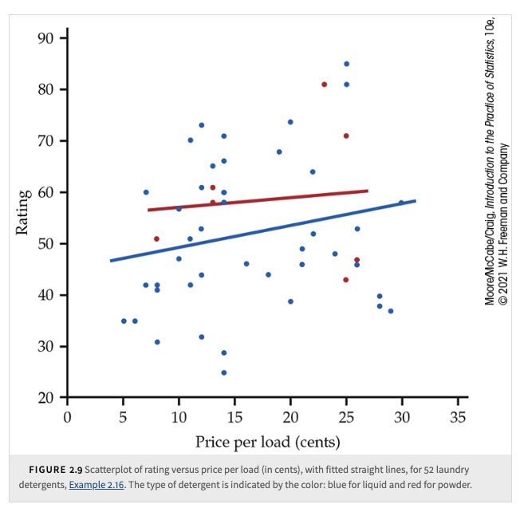
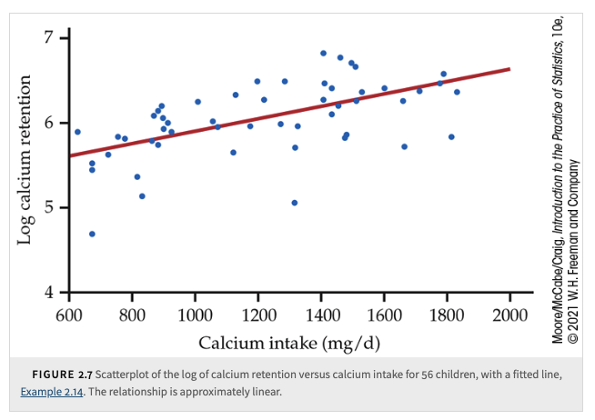
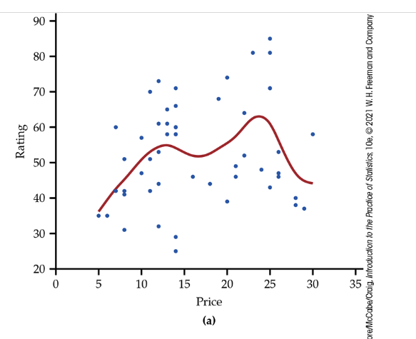
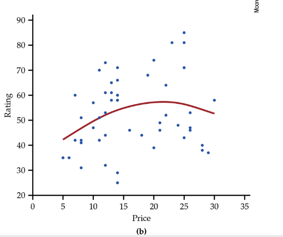
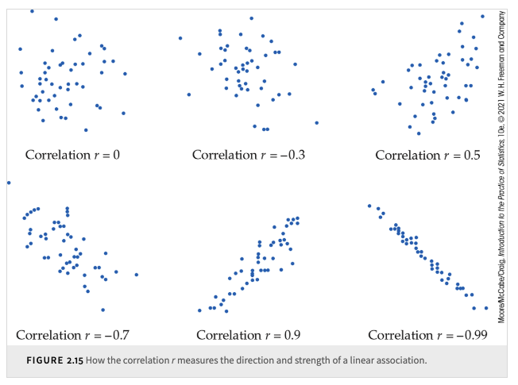

10. Looking at Data — Relationships#
Textbook reference
This chapter corresponds to Chapter 2 of Introduction to the Practice of Statistics (Moore, McCabe & Craig, 10th ed.). Note that the course chapter numbers (shown in the sidebar) follow our teaching order, which differs from the textbook order.
Learning objectives
After this chapter, you will be able to:
Make and interpret a scatterplot, describing a relationship by its form, direction, and strength, and spotting outliers.
Add a categorical variable to a scatterplot, and use smoothing and the log transformation when the pattern is real but not a line.
Compute and interpret the correlation \(r\), including its meaning as an average product of z-scores.
State the properties and cautions of \(r\): linear relationships only, no units, not resistant to outliers, no explanatory/response distinction, correlations of averages run high, and association is not causation.
Choose the right tool for the pair of variables in front of you: two quantitative variables call for correlation; a quantitative response across categories calls for ANOVA-style comparison.
Key concepts at a glance
Relationships · Scatterplots · Correlation · Putting it all together
Where are we? A question before we start
ANOVA compares a quantitative response across categories — reaction time across three diets, heights across colleges. The explanatory variable was a set of labeled boxes. But what if the explanatory variable is itself quantitative? Does caffeine dose change reaction time — not “caffeine vs. decaf,” but 0 mg, 50 mg, 120 mg, 200 mg, any value on a continuum? Side-by-side boxplots can no longer hold all the possibilities: the categories melt into an axis. Plot dose on one axis and reaction time on the other, one point per subject, and you have this chapter’s central picture — the scatterplot.
In the previous chapters, we mainly focused on exploring the distributions of a single variable and studying statistical procedures related to that one variable or the mean of a single response variable.
Many interesting problems, however, arise when we wish to explore the relationships among two or more variables. Starting from this chapter, we will learn some graphing techniques and modeling techniques for studying the relationships among variables.
In general, if two variables have no relationship at all, we say that the variables are independent. Two variables are statistically independent if the occurrence (or value) of one does not provide any information about the occurrence (or value) of the other. In many real-world situations, true independence is rare because various factors often interrelate.
When variables are not independent, they are considered dependent; that is, knowing something about one variable gives you some information about the other. If two variables are dependent, then we say they have some kind of relationship.
In this course, we focus on the basic and most common type of relationship: the linear relationship. Among all types of relationships, we explore association and learn some basic tools to quantify it. We also touch on using linear regression modeling techniques to analyze associations and use the models as tools for prediction. Of course, there are other types of relationships among variables, such as causal relationships, which go beyond mere association.
10.1. Relationships#
Association between Variables
Two variables measured on the same cases are associated if knowing the value of one of the variables tells you something about the value of the other variable.
A response variable (dependent variable) measures an outcome of a study. An explanatory variable (independent variable) explains or causes changes in the response variable.
A description of the key characteristics of a data set that will be used to explore a relationship
between two variables should include:
Cases. Identify the cases and how many there are in the data set.
Categorical or quantitative. Classify each variable as categorical or quantitative.
Values. Identify the possible values for each variable.
Explanatory or response. If appropriate, classify each variable as explanatory or response.
Label. Identify what is used as a label variable if one is present.
10.2. Scatterplots#
The most common way to display the relationship between two quantitative variables is by using a scatterplot. It helps us to describe the form and strength of the association.
Scatterplot
A scatterplot shows the relationship between two quantitative variables measured on the same cases. The values of one variable appear on the horizontal axis, and the values of the other variable appear on the vertical axis. Each case in the data appears as the point in the plot determined by the values of both variables for that case.
Always plot the explanatory variable, if there is one, on the horizontal axis (the \(x\) axis) of a scatterplot. We usually call the explanatory variable \(x\) and the response variable \(y\). If there is no explanatory-response distinction, either variable can go on the horizontal axis. Time plots are special scatterplots where the explanatory variable \(x\) is a measure of time.
Example: shoe size and height — our running dataset
Back to the heights of Purdue students. Suppose we suspect that students with bigger feet tend to be taller, and we record shoe size (US) and height (inches) for \(n = 8\) students:
Student |
1 |
2 |
3 |
4 |
5 |
6 |
7 |
8 |
|---|---|---|---|---|---|---|---|---|
Shoe size \(x\) |
6 |
7 |
8 |
8.5 |
9 |
10 |
11 |
12 |
Height \(y\) |
64 |
65 |
68 |
66 |
70 |
69 |
72 |
74 |
Run the checklist from the box above: the cases are the 8 students; both variables are quantitative; shoe size is the natural explanatory variable (it is easier to observe, and we will later use it to predict height), so it goes on the \(x\)-axis.
Sketch these 8 points (really — do it on paper). Then describe what you see the same way you would describe a distribution, but with the new vocabulary:
Form: the points drift upward in a roughly straight-line band — a linear form.
Direction: larger shoe sizes come with taller students — a positive association.
Strength: the points hug the imaginary line fairly tightly, but not perfectly — student 4 (size 8.5, only 66 inches) sits visibly below the trend. Fairly strong.
Notice the association is a statement about tendency, not a rule: student 4 is shorter than student 3 despite bigger feet. We will keep these same 8 students for the whole chapter — and fit a line through them in the next one.
A higher price should be associated with a better product.
{kind=link}

{kind=link}
Instead of shape, center, and spread for distributions, we will look at form, direction, and strength for relationships.
Examining a Scatterplot
In any graph of data, look for the overall pattern and for striking deviations from that pattern.
You can describe the overall pattern of a scatterplot by the form, direction, and strength of the relationship.
When we look at it carefully, we see that it suggests a linear relationship. In other words, it may be appropriate to summarize the relationship with a straight line. To explore this possibility, we can use software to put a straight line through the data.
People’s focus on linear relationships stems from several practical and theoretical advantages.
{kind=link}

Although it is very weak, the relationship in the figure has a direction: laundry detergents that cost more have somewhat higher ratings. This is a positive association between the two variables.
Positive Association, Negative Association
Two variables are positively associated when above-average values of one tend to accompany above-average values of the other, and below-average values also tend to occur together.
Two variables are negatively associated when above-average values of one tend to accompany below-average values of the other and vice versa.
The strength of a relationship in a scatterplot is determined by how closely the points follow a clear form. The overall relationship in the figure is weak.
To add a categorical variable to a scatterplot, use a different plot color or symbol for each category.
{kind=link}

How to read this figure (the detergent scatterplots, step by step)
The three detergent plots in the tabs above are a miniature course in reading scatterplots. Walk through them in order:
First plot (all 53 detergents): start at the axes — price per load (explanatory) runs along \(x\), rating (response) up \(y\). Each dot is one detergent. Before judging any trend, scan for deviations: one detergent sits far to the right (near 56 cents per load), detached from the cloud. That is an outlier in the \(x\) direction, and your eye’s sense of the trend is being dragged by it.
Second plot (outlier removed): now judge the overall pattern. The cloud drifts weakly upward — a positive direction — but the points scatter widely around any line you imagine. Form: roughly linear. Strength: weak.
Third plot (with fitted line): the line makes the direction unmistakable (it slopes up), but do not let it fool you about strength — the line is equally confident-looking whether points hug it or scatter far from it. Strength is read from the scatter around the line, never from the line itself.
Reading order to internalize: axes → individual points and outliers → overall pattern (form, direction, strength) → only then any fitted summary.
A question before this section
The detergent line and the shoe-size band were straight. But nature does not sign a contract to be linear: the body absorbs calcium eagerly at low intakes and then hits diminishing returns; learning curves shoot up and flatten; growth is S-shaped. What if the pattern is real but not a line? Two honest options: bend the summary to fit the data (smoothing), or bend the data until the pattern straightens (transformation). The next figures show both.
{kind=link}
Calcium intake and retention: As calcium intake increases, the body retains more calcium, but the relationship is nonlinear—initially linear, then leveling off.
Transformations for linearity: Some curved relationships, can be made approximately linear by applying a transformation to the data.
Common use of transformations:
Help make distributions more Normal.
Convert curved relationships into more linear forms.
The Log Transformation
Purpose: Converts variables with only positive values into a more interpretable scale.
If zeros exist, replace them with a small value (e.g., half of the smallest positive value).
Logarithms in statistics:
A powerful tool for transformations.
Natural logarithms are commonly used in statistical software.
{kind=link}

We add a smooth curve to our scatterplot to better understand the relationship between calcium retention and calcium intake. This curve helped us to see that the amount of calcium retained tends to level off as the intake increases. The method that we used to construct the curve is called smoothing.
Today, most statistical software includes options to perform the calculations needed for smoothing. The technical details vary, but the basic idea is that there is a smoothing parameter that controls the degree to which the relationship is smoothed. Here is another example.
Scatterplot of rating versus price per load (in cents), with smooth curves: (a) with a small value of the smoothing parameter; (b) with a higher value of the smoothing parameter.
{kind=link}

{kind=link}

10.3. Correlation#
A question before this section
Look again at the 8-student scatterplot. Your eye says “positive, fairly strong.” Mine says “moderate.” A classmate, squinting at a version with stretched axes, says “very strong.” All three of us are looking at the same 8 points — and the scale of the plot alone can change what our eyes report. We need a number that settles it: one that everyone computes from the data the same way, that does not care how the axes are drawn, and that lands on the same value for all of us. That number is the correlation \(r\).
We have data on variables \(x\) and \(y\), two quantitative variables for \(n\) cases.
Example: Measuring height and weight of \(n\) people.
Each individual has a height \(x_i\) paired with weight \(y_i\).
These pairs are used in calculating the correlation.
Correlation
The correlation measures the direction and strength of the linear relationship between two quantitative variables.
Correlation is usually written as \(r\).
Suppose we have data on variables \(x\) and \(y\) for \(n\) individuals.
The means and standard deviations of these variables:
\(\bar{x}\) and \(s_x\) for \(x\)-values.
\(\bar{y}\) and \(s_y\) for \(y\)-values.
The correlation \(r\) is given by:
\[ r = \frac{1}{n-1} \sum \left( \frac{x_i - \bar{x}}{s_x} \right) \left( \frac{y_i - \bar{y}}{s_y} \right) \]Interpreting Correlation
Correlation values range between -1 and 1.
The two variables are said to be uncorrelated when \(r = 0\).
Values near 0 indicate a weak linear relationship.
Values near -1 or 1 indicate strong linear association.
If \(X\) and \(Y\) are independent, the population correlation is \(0\), and the sample \(r\) will be close to (but almost never exactly) \(0\); however, \(r = 0\) does not imply independence.
\(r = 1\) or \(r = -1\) iff \(Y = aX + b\) for some numbers \(a\) and \(b\) with \(a \neq 0\).
However, if \(|r| \ll 1\), there may still be a strong relationship between the two variables, just one that is not linear.
And even if \(|r|\) is close to 1, it may be that the relationship is really nonlinear but can be well approximated by a straight line.
Association (a high correlation) is not the same as causation.
No distinction between explanatory and response variables. No direction.
Correlation is not resistant to outliers
\(r\) is strongly affected by outliers.
Use caution when interpreting correlation in scatterplots with outliers.
Visual interpretation of \(r\) is difficult
Changing the scatterplot’s scale may mislead perception, but it does not change correlation.
Use software tools to properly assess how extreme observations influence \(r\).
A correlation based on averages is usually higher than if we used data for individuals.
Understanding the Formula
The summation sign \(\sum\) means “add these terms up.”
Though helpful in understanding correlation, it is not convenient for manual calculation.
In practice, software or a calculator should be used.
Standardization for Correlation
The formula starts by standardizing observations:
Example:
\(x\) = height (cm)
\(y\) = weight (kg)
\(\bar{x}\) and \(s_x\) are the mean and standard deviation of \(n\) heights.
Standardized Value for Height
\[ \frac{x_i - \bar{x}}{s_x} \]Z-score Interpretation
Shows how many standard deviations a value is from the mean.
Standardized values have no units.
Standardizing both variables allows for direct comparison.
Final Step
\(r\) is the average of the products of standardized height and weight values.
Example: r as an average product of z-scores, by hand
The formula stops being mysterious the moment you compute it once by hand. Take just four students (a subset small enough to do honestly): shoe sizes \(x = 6, 8, 10, 12\) and heights \(y = 64, 66, 71, 71\).
First the ingredients: \(\bar{x} = 9\), \(\bar{y} = 68\), \(s_x \approx 2.58\), \(s_y \approx 3.56\). Now standardize each coordinate and multiply:
Student |
\(x_i\) |
\(y_i\) |
\(z_x = \frac{x_i - \bar{x}}{s_x}\) |
\(z_y = \frac{y_i - \bar{y}}{s_y}\) |
product \(z_x z_y\) |
|---|---|---|---|---|---|
1 |
6 |
64 |
\(-1.16\) |
\(-1.12\) |
\(+1.31\) |
2 |
8 |
66 |
\(-0.39\) |
\(-0.56\) |
\(+0.22\) |
3 |
10 |
71 |
\(+0.39\) |
\(+0.84\) |
\(+0.33\) |
4 |
12 |
71 |
\(+1.16\) |
\(+0.84\) |
\(+0.98\) |
Watch why it works. Student 1 is below average in both shoe size and height: two negative z-scores, so their product is positive. Student 4 is above average in both: two positives, again a positive product. Points in the lower-left and upper-right quadrants (relative to the point of means) vote for a positive association; points in the other two quadrants would contribute negative products and vote against. The correlation is simply the average of the votes — that is why tight “low-with-low, high-with-high” patterns push \(r\) toward \(+1\).
And because everything is in z-scores, \(r\) has no units: measure height in centimeters instead of inches and every \(z_y\) — hence \(r\) — is unchanged.
Example: r for the eight students
For the full 8-student dataset from the scatterplot section, software (or patient arithmetic) gives \(\bar{x} = 8.94\), \(\bar{y} = 68.5\), \(s_x \approx 2.01\), \(s_y \approx 3.46\), and
This settles the argument from the section opener: not “fairly strong” versus “moderate,” but \(0.95\) — a strong positive linear association, for everyone, on any axis scale. (Keep this number; the regression chapter reuses every ingredient in it.)
Example: a negative association — height and legroom comfort
Positive associations dominate our examples, so here is a negative one. Ask the same 8 students to rate how comfortable the back seat of a compact car feels on a 0–10 scale. Plausible data, from shortest to tallest student (heights 62 to 76 inches): ratings \(9, 9, 8, 7, 6, 5, 3, 2\). Taller students fold themselves into less legroom, so above-average heights accompany below-average comfort: the scatterplot slopes down, most products of z-scores are negative, and the correlation computes to \(r \approx -0.98\) — a strong negative association. Note what the sign does and does not say: it gives the direction of the linear relationship; the strength is carried by how close \(|r|\) is to 1, and \(r = -0.98\) is every bit as strong as \(r = +0.98\).
Common misunderstanding
Students often think: “\(r = 0\) (or near 0) means the two variables have no relationship.”
In fact: \(r\) measures linear relationship only. A variable can determine another exactly and still have correlation zero, if the pattern is curved.
Quick check: take \(x = -3, -2, -1, 0, 1, 2, 3\) and let \(y = x^2\) — a perfect U-shape where \(y\) is completely determined by \(x\). Compute (or trust the symmetry): the positive products from the right arm exactly cancel the negative products from the left arm, and \(r = 0\) exactly. This is why you must always plot the data first — the correlation comes second.
Common misunderstanding
Students often think: “Correlation is the general-purpose tool for any two variables — I can ask for the correlation between height and college.”
In fact: correlation is defined only when both variables are quantitative — the formula needs a mean and a standard deviation for each, and “College of Engineering” has neither. “The correlation between height and college” is not wrong so much as meaningless.
Quick check: what is the right tool for “does height differ across colleges”? A quantitative response compared across categories — that is exactly the side-by-side comparison of the ANOVA chapter, not a scatterplot. Match the tool to the variable types: two quantitative → scatterplot and \(r\); quantitative response vs. categorical explanatory → boxplots and ANOVA.
Common misunderstanding
Students often think: “With \(r = 0.95\), surely big feet make students tall — a correlation this strong must mean causation.”
In fact: no value of \(r\), however close to \(\pm 1\), establishes causation — recall the chocolate–Nobel correlation of Chapter 3, where national wealth drove both. (Here, overall body size and genetics drive both foot length and height.)
Quick check: would stretching students’ feet make them taller? The absurdity is the point — revisit Chapter 3’s lurking-variable diagrams whenever a strong \(r\) tempts you.
Caution: the correlation of averages runs high
The last bullet above deserves its own demonstration. Suppose that instead of individual students we only had group averages — say, the average shoe size and average height in each of 5 residence halls. Averaging washes out the individual-to-individual scatter (the short student with big feet cancels the tall one with small feet), and only the smooth group-level trend survives. In one simulation of 100 students split across 5 halls, the correlation for the individuals was \(r = 0.75\), but the correlation of the five hall averages was \(r = 0.99\). Same underlying relationship — dramatically inflated correlation. So when a report announces a striking correlation, always ask: correlation of what — individuals, or averages? A conclusion about averages does not transfer to individuals.
{kind=link}

How to read this figure (six correlations, two dials)
This panel is your calibration chart — the one to reconstruct mentally whenever someone quotes a correlation. Every plot is decoded by exactly two dials:
The tightness dial reads \(|r|\). Ignore signs for a moment and scan how snugly the cloud wraps its imaginary line. At \(r = 0\) the plot is a formless blob — knowing \(x\) tells you nothing (linear) about \(y\). At \(|r| = 0.3\) you can barely convince yourself there is a tilt. By \(|r| = 0.7\) the trend is unmistakable but predictions are still sloppy; at \(|r| = 0.9\) the band is tight; at \(|r| = 0.99\) the points all but are the line. Note how nonuniform the dial is: the visual jump from \(0.9\) to \(0.99\) is enormous, while \(0\) to \(0.3\) is barely perceptible — correlation is not an evenly-spaced “percent of strength.”
The tilt direction reads the sign. Clouds drifting up-to-the-right (\(0.5\), \(0.9\)) are positive; down-to-the-right (\(-0.3\), \(-0.7\), \(-0.99\)) are negative. The sign says nothing about strength: \(-0.99\) is far stronger than \(+0.5\).
Two deliberate features of the panel: all six plots use the same axis scales (so your eye’s tightness judgments are comparable — remember, rescaling axes fools the eye but never changes \(r\)), and none of the patterns is curved (for curved patterns, this chart — and \(r\) itself — is the wrong tool).
Calibrate yourself: our 8 students at \(r = 0.95\) should look slightly tighter than the \(0.9\) panel. Sketch where they would sit.
10.4. Putting It All Together: From Two Columns of Numbers to a Defensible Sentence#
Let’s run the whole chapter through the shoe-size data, in the order you should always work.
Do students with bigger feet tend to be taller? You have shoe size and height for 8 students.
Step 1 — Describe the data before touching it. Cases: 8 students. Both variables quantitative (so scatterplot and correlation are legal tools — this is the checkpoint the “height and college” question fails). Explanatory: shoe size; response: height.
Step 2 — Plot first. Scatterplot with shoe size on \(x\). Look for the overall pattern and deviations: linear form, positive direction, fairly strong, no wild outliers — though student 4 (size 8.5, 66 inches) reminds us the pattern is a tendency, not a law. This step is not optional: a U-shaped pattern or a lurking outlier would change everything that follows, and only the plot can reveal them.
Step 3 — Only now, compute. \(r \approx 0.95\): a strong positive linear association, confirming and sharpening the eye’s verdict. Standardization means this number would survive a switch to centimeters and European shoe sizes untouched.
Step 4 — Say exactly what you may say. “Among these 8 students, shoe size and height have a strong positive linear association (\(r \approx 0.95\)): students with larger shoe sizes tend to be taller.” What you may not say: that big feet cause height (lurking variables — overall body size — from Chapter 3), or that this holds for all Purdue students (8 students are a tiny sample; inference waits for later chapters), or anything about individuals if your \(r\) had come from group averages.
Step 5 — Feel the limit of \(r\). The correlation certifies that a line is a good summary and says how tightly the points hold to it — but it names no line. Which line? Predicting what height for a size-10 student? That question — prediction — is precisely where the next chapter begins.
10.5. Check Your Understanding#
1. A classmate reports “the correlation between height and favorite dining court is r = 0.32.” What two things are wrong?
First, the correlation is meaningless: dining court is a categorical variable, and \(r\) is defined only for two quantitative variables. Second, the right analysis for “does height differ by dining court?” is a comparison of the quantitative response across categories — side-by-side boxplots and ANOVA, not correlation. (Software will happily compute nonsense if the categories are coded 1, 2, 3 — the burden of checking variable types is on you.)
2. A dataset of daily temperature (x) and campus heating-plus-cooling energy use (y) gives r ≈ 0. Energy clearly depends on temperature. What happened?
Think about the shape: energy use is high on very cold days (heating) and high on very hot days (cooling), with a minimum at mild temperatures — a U-shaped, strongly nonlinear relationship. Just like \(y = x^2\) on \(x = -3, \dots, 3\), the positive and negative z-score products cancel and \(r\) lands near 0 even though the relationship is strong. The failure was skipping the scatterplot: \(r\) was never the right summary for this pattern.
3. You convert the 8 students’ heights from inches to centimeters and swap the axes (height on x, shoe size on y). What happens to r, and why?
Nothing — \(r \approx 0.95\) both times. Changing units multiplies each deviation and the standard deviation by the same factor, so every z-score is unchanged. And the formula multiplies \(z_x z_y\) symmetrically, so exchanging the roles of \(x\) and \(y\) leaves the products — hence \(r\) — identical: correlation makes no explanatory/response distinction. (Foreshadowing: in the next chapter the regression line will not share this symmetry.)